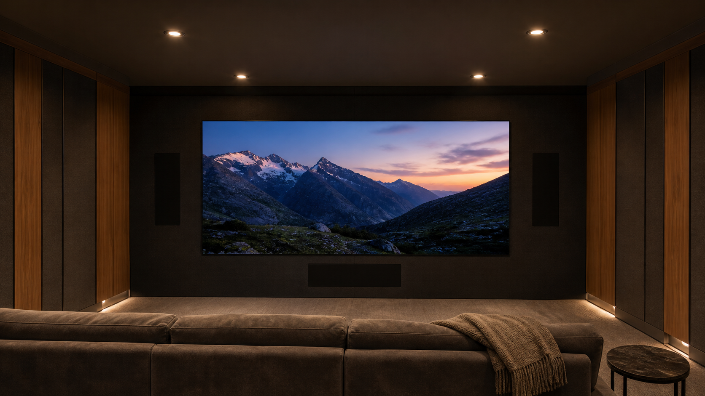

The right choice between MicroLED and a projector depends on the finished room. MicroLED is often the stronger fit when practical light remains on, the architecture cannot protect a projection path, custom image dimensions matter, or the room serves several purposes. Projection remains a serious option in a fully controlled private cinema when an extremely large or wide image and an acoustically transparent front stage are priorities. An authorized integrator should choose the category only after coordinating light, image geometry, seating, speaker placement, structure, service access, sources, and commissioning.
This is not a contest with one universal winner. Direct-view MicroLED and projection build the image in different ways, and each asks the architect, lighting designer, acoustician, and AV professional to solve a different room. The useful comparison begins with those physical differences rather than a list of headline specifications.
How MicroLED and Projection Build the Image
A MicroLED wall is self-emissive. The pixels generate the image at the display surface. A projector sends light through the room to a separate screen, which reflects that light toward the seats. That additional path changes how ambient light, throw distance, people moving through the room, lens position, screen material, and front-stage depth affect the result.
BlackFire gives Opal's residential MicroLED walls a dark, low-reflection surface engineered to preserve image contrast in real rooms. It does not eliminate the need for thoughtful lighting. Fixture aiming, window treatment, pale finishes, and adjacent-room light still change what the viewer sees. The detailed planning method is covered in our guide to MicroLED brightness for home theater.
When Room Light Favors MicroLED
A dedicated cinema can be made very dark, but many premium residences use the same room for films, sports, gaming, music, and entertaining. Sconces may remain on. Doors may open into brighter circulation spaces. A media room may have windows or light-colored finishes that the interior designer does not want to replace.
Because MicroLED generates the image at the wall, it offers useful luminance headroom for these mixed conditions. The integrator can commission restrained cinema settings for dark viewing and separate evening or day modes for practical light. Maximum output is not the target. The goal is a comfortable measured image that preserves shadow detail and highlight separation in each planned room state.
Projection is most convincing when the room can protect the reflected image. That can mean coordinated blackout shades, dark finishes near the screen, controlled fixture placement, and a clear throw path. In a purpose-built cinema, those requirements can be part of the architecture rather than compromises added later.
When Image Size and Aspect Ratio Favor Projection
Projection remains an effective path to an extremely large image, particularly when the design calls for a wide CinemaScope screen that fills a purpose-built front wall. The screen can be sized around sightlines and front-stage geometry without adding a self-emissive surface across the entire area. A projector enclosure, lens location, throw distance, and ventilation must then be coordinated with the room.
MicroLED removes throw-distance and lens-alignment constraints. Its modular construction supports custom dimensions and aspect ratios, but the wall still has a defined pixel grid, cabinet geometry, structure, power and signal requirements, and service strategy. The closest seat must be evaluated against pixel pitch and image size. Our residential MicroLED selection guide explains how those variables come together.
Do not choose diagonal size first
Begin with active image width and height, the closest and farthest critical seats, head clearance, front-speaker geometry, and the room's intended aspect ratios. The display category should follow that layout, not force it.
How the Display Choice Changes the Front Speakers
An acoustically transparent projection screen can place the left, center, and right speakers behind the image. That supports dialogue localization and lets the screen occupy more of the front wall. It is not acoustically invisible: CEDIA's RP22 guidance notes that screen materials affect sound transmission and create reflected energy that must be considered in the design.
A MicroLED wall is a solid surface, so the screen-channel speakers cannot sit behind it. Left and right channels may be placed beside the wall, while the center channel is engineered above, below, or through another coordinated architectural solution. The correct geometry depends on screen height, seating elevation, speaker dispersion, processing, acoustics, and the visual priorities of the room.
This can be the deciding factor. A cinema built around a deep baffle wall and concealed full-size speakers may favor projection. A room that prioritizes emitted-light image performance may accept visible, concealed, or architecturally integrated speaker positions around a MicroLED wall. The tradeoffs are detailed in our guide to audio planning around a solid MicroLED display.
Room-Condition Comparison Matrix
| Room decision | MicroLED tends to fit when | Projection tends to fit when | What the dealer verifies |
|---|---|---|---|
| Ambient light | The room retains daylight, practical lighting, or several viewing modes. | The room can consistently protect the reflected image with controlled light and finishes. | Light at the image surface, reflected glare, shade states, and calibrated presets. |
| Image geometry | No throw path is available, or a precise modular image is integrated into the architecture. | A very large or wide screen can be supported by lens, throw, enclosure, and screen geometry. | Active width and height, aspect ratios, sightlines, lens path, structure, and clearances. |
| Front audio | The room can support engineered speaker positions around the solid wall. | The design prioritizes an acoustically transparent screen with speakers behind the image. | Speaker angles, acoustic effects, dialogue localization, screen height, and seat elevation. |
| Architecture | The wall can carry the display structure, power, signal, ventilation, and service access. | The room can carry a screen wall plus a protected projector location and optical path. | Wall depth, equipment location, cooling, conduit, access, finish tolerances, and coordination dates. |
| Viewing positions | Wide seating or secondary viewing areas benefit from a direct-view surface. | The room is organized around controlled central sightlines and a designed screen surface. | Closest and farthest seats, horizontal and vertical angles, risers, aisles, and pitch visibility. |
| Commissioning | The assembled wall, processing, uniformity, sources, and room modes can be measured together. | The projector, lens, screen, room light, sources, and optical alignment can be measured together. | Signal path, grayscale, color, luminance, HDR behavior, geometry, uniformity, and stored scenes. |
What the Integrator Is Actually Deciding
The authorized dealer is not simply selecting the brighter display or the largest screen. The job is to coordinate a complete visual and acoustic system with the residence before framing, millwork, lighting, equipment locations, and speaker positions become expensive to change.
- Room purposeDefine film, sports, gaming, music, hosting, and daytime use before choosing the display category.
- Image envelopeMap active width, height, aspect ratios, closest seat, farthest seat, and standing views.
- Light controlMeasure daylight and practical light at the image and document every intended viewing state.
- Audio geometryResolve center-channel location, left-right spacing, screen effects, acoustics, and seating elevation.
- Architectural depthCoordinate the MicroLED structure and service plane or the projection screen wall, throw path, and enclosure.
- Source qualityVerify switching, transport, processing, frame rates, formats, and the content the owner actually watches.
- Service accessPlan how modules, electronics, projector components, filters, cabling, and control equipment will be reached.
- Acceptance testingDocument geometry, light state, image measurements, source paths, control scenes, and the handoff baseline.
Which One Should You Choose?
Choose MicroLED when the room needs direct-view contrast with practical light present, cannot preserve a projector throw path, benefits from custom modular dimensions, or serves several residential uses. Choose projection when a controlled cinema prioritizes a very large or wide acoustically transparent image and the architecture can support the complete optical and acoustic front stage.
The best specification may be obvious only after the integrator draws both options. Ask for two front elevations, reflected ceiling coordination, speaker geometry, seating sightlines, equipment and service locations, and the room conditions used for commissioning. The right recommendation is the one that solves the entire room with the fewest hidden compromises.
Primary Planning References
- CEDIA/CTA-RP22: Immersive Audio Design Recommended Practice
- Dolby Atmos Home Theater Installation Guidelines
- CEDIA: A room-first private cinema using projection and an acoustically transparent screen
Compare Both Systems in the Finished Room
Your authorized Opal dealer can model the image, seating, light, audio, architecture, source path, service access, and commissioning plan before recommending MicroLED or projection.
Contact an Authorized Dealer